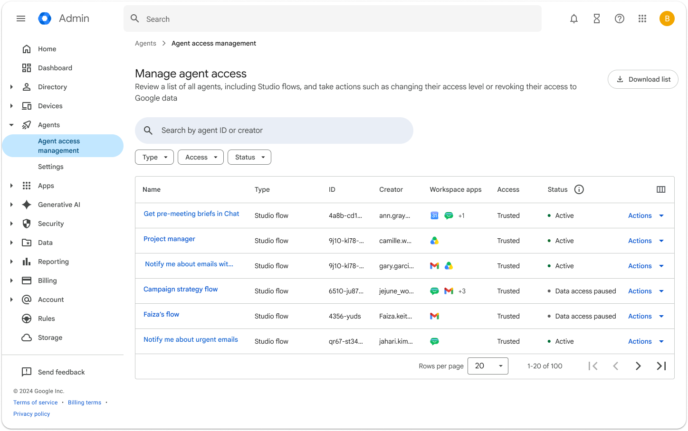

GeminiとCopilotを比べるとき、同じ質問への回答だけでは社内での使いやすさを判断できません。普段の文書がどこにあり、誰に閲覧権限があるかで、必要な設定や研修が変わります。既存の業務環境とのつながりから比較します。
Googleの管理画面を、既存基盤と比較する入口にする

Googleの実画面では、組織単位でエージェント利用を制御します。Microsoft側もSharePointやMicrosoft 365の権限と管理機能が前提になるため、モデル性能だけでなく既存基盤との接続を比較します。
GeminiとCopilotは、どちらを選べばよいですか？
主要業務が置かれている基盤を起点に、同じ課題と受入条件で小規模比較します。
NotebookLMは資料に根拠づける用途として別枠で評価します。Copilot Chat、Microsoft 365 Copilot、Gemini、NotebookLMを一つの『チャットAI』として比較しません。
選定は、どんな順番で進めればよいですか？
業務データの所在から見て、費用、体制、内製の見通し、モデル性能の順に判断します。
混在環境の記入例は「業務名／原資料の置き場所／既定のAI／出力確認者／例外」です。議事録と文書作成を別々に決めても構いません。全社員へ製品選びを任せず、業務の担当が既定を決めます。

生成AIの価値は、モデルの賢さと渡せる文脈の量で決まります。文書がGoogleドライブにあればGeminiが、SharePointにあればCopilotが文脈を持ちます。同じモデルでも、届く範囲が違えば結果は変わります。
- 業務データの所在を確認します。日常の文書・メール・表計算が、どちらの基盤に置かれているかを見ます。
- 費用の出方と稟議のしやすさを確認します。追加ライセンスの稟議が通る組織かどうかを見ます。
- 運用を担う体制を確認します。管理・展開・問い合わせ対応を、誰が担当できるかを見ます。
- 内製の見通しを確認します。将来エージェントを作る計画があるか、使うだけで十分かを見ます。内製の層は、CopilotではCopilot Studioです。GeminiではGoogle Workspace Studioです。
- 最後にモデルの性能を比べます。上の4つが同点だったときの比較軸です。
順番を逆にしてモデル性能から入ると、検証に時間を使ったあげく、今使っている基盤を選ぶ結論に戻ります。自社業務での性能差と、移行・運用の費用を合わせて比べます。
選定のあとに、どんな失敗が起きやすいですか？
未利用の理由は製品名だけでは決まりません。認知、業務との接点、既定ツール、管理者の案内を仮説として確認します。

- Copilotで確認する仮説。ライセンスを配っても、使いどころが分からず利用が続かない場合があります。案内の到達、業務別の使いどころ、利用レポートを確認します。
- Geminiで確認する仮説。Workspaceに含まれていても、日常業務の入口が伝わらず利用されない場合があります。GmailやDocsの業務別の入口と、案内後の利用状況を確認します。
- 両方を全社員に配ってしまう。Microsoft 365とGoogle Workspaceを併用する組織では、「どちらも使えます」とだけ案内すると判断が現場任せになります。業務ごとの既定ツールと例外申請を決め、利用状況で見直します。
両方がある会社は、次のように整理します。
- 業務単位で主戦場を決めます。「日常の文書作成は◯◯、議事録は△△」と、業務ごとに1つを指定します。
- 基盤に合わせます。その部門の業務ファイルが置かれている側を主に使います。
- もう一方は範囲を限定します。特定業務や特定部門に絞り、全社配布はしません。
- 研修も分けて設計します。共通の考え方は合同で行い、操作と型づくりは基盤ごとに分けます。
両方を残す判断そのものは、間違いではありません。会社として業務ごとの既定を決め、例外を認める形にすると、混在環境でも定着は進みます。
研修会社に相談するときは、この違いを踏まえた提案が出てくるかを見てください。ツール名だけ差し替えた同じカリキュラムが出てきたら、定着まで面倒を見る設計にはなっていません。詳細はMicrosoft Copilotが定着しない原因と対策で扱っています。
CopilotとGeminiの費用を、表で比べるとどうなりますか？
Copilotは基盤にAI分が乗る二階建て、GeminiはAI込みの一階建てです。ただし、総額は既存契約、対象人数、必要機能で変わります。
| 項目 | Microsoft 365 Copilot | Google Workspace の Gemini |
|---|---|---|
| 基盤ライセンス | Microsoft 365の対象契約を確認 | Google Workspaceの契約プランを確認 |
| AI分の追加費用 | 月額4,497円相当（年間契約・税別／2026年7月時点の公表値） | 追加ライセンスなし（各プランに Gemini AI アシスタントが含まれる） |
| エージェント内製の層 | Copilot Studio（別途の費用体系） | Google Workspace Studio（提供範囲は公式ヘルプで要確認） |
| 全社基盤に上げる場合 | Microsoft側の該当サービスを別途検討 | Gemini Enterprise（1シート月額21米ドルから／Standard・Plusは30米ドルから） |
| 研修費 | 製品ライセンスと分けて見積もる | 製品ライセンスと分けて見積もる |
| 請求の確認先 | Microsoft 365の契約明細とCopilotの追加ライセンス | Google Workspaceの契約明細とGemini Enterpriseの追加契約 |
出典：Microsoft、Google Workspace、Google Cloudの公式料金ページ（2026年10月6日確認）。価格・提供条件は改定されるため、契約時に再確認してください。
対象機能を含む既存契約なら、追加ライセンス費を抑えられます。それでも、入力する情報、管理設定、追加サービスの契約を確認し、研修費と運用費を見積もります。Gemini Notebook EnterpriseなどGoogle Cloud側のサービスは、Workspaceの機能利用とは別に契約と権限を確認します。既存の契約で使える企業でも、「もう使えるのに、なぜお金をかけるのか」を説明する責任がこちらに移ります。
研修費の組み立ては、Microsoft Copilot研修の費用相場にまとめています。
次の一歩は何から始めればよいですか？
製品比較の前に、対象業務、情報の機微度、既存の基盤、運用の担当部署の4点を決めます。
TechWorkerの法人研修は、主要な生成AIツールに横断で対応しています。対象は、Gemini、Microsoft Copilot、Claude Codeなどです。貴社の基盤と業務に合う組み合わせから設計します。
選定段階のご相談や、混在環境の整理からのご相談も承っています。導入の進め方はGeminiの法人導入が参考になります。内製まで進む場合はGemsとWorkspace Studioによる内製をご覧ください。
出典と確認範囲
確認日：2026年10月6日。製品仕様、契約、助成要件は変更されるため、実施時点の公式情報を確認してください。